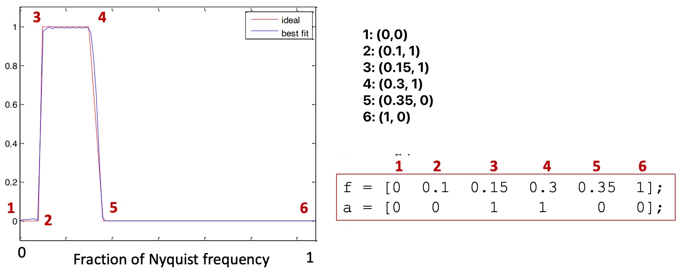

生物医学工程 | EEG分析 - 希尔伯特变换
希尔伯特变换｜Hilbert transform
大致操作方法：先进行bandpass filter，然后进行Hilbert transform获得complex signal，从而分离出amplitude和phase
目的：通过添加虚数部分，从实数信号中获得瞬时幅度amplitude和相位phase
📌我们并不改变实数部分，只是在这基础上添加了虚数部分

数学定义
假设我们已知信号叫做，则Hilbert transform为：
imag信号是real信号shift 之后的结果 。比如原始信号为，则Hilbert变换之后的结果为
代码
MATLAB代码
1 | % 自己写hilbert的内部代码 |
1 | % 使用Hilbert函数 |
Python代码
1 | # 自己写hilbert的内部代码 |
1 | # 使用Hilbert函数 |
滤波｜Filter
在使用Hilbert之前需要对数据进行滤波处理，不然过大的带宽会导致结果难以解释。
常见的两种滤波器：有限脉冲响应Finite impulse response (FIR)；无限脉冲响应Infinite impulse response (IIR)
FIR比起IIR的优点和特点：
- FIR的kernel函数在正无穷和负无穷的地方都等于0
- wavelet就算一种FIR滤波器
- 比起IIR，更推荐使用FIR，因为其既稳定又不容易引入非线性相位失真（ nonlinear phase distortions）
- 但是FIR的计算花费更高
设计滤波器需要注意的事情：
- 滤波器频谱图上尖锐的边缘（sharp edge）会导致时域的ripples，因此我们最好设计平台状（Plateau-shaped）的滤波器，并尽可能保障过渡地带（transition zones）是（最大频率-最小频率）的10%～25%
代码
MATLAB代码
最常见的函数firls和firl，还有一些其他的函数
firls：最小二乘法线性相位FIR滤波器（Least-squares linear-phase FIR filter）
1 | b = firls(n, f, a) |
n：n表示filter order。且对应的kernel的长度是n+1（指的是point number而不是时间）。n没有上限，越高越好，但是会增加计算量；n的下限是最低频率的2-5倍（比如最低频率为10Hz，则通常使用200-500ms时间长度对应的kernel）
f：f表示滤波器各点的x坐标，是滤波器各点频率在经过scale之后的相对值（通过scale令Nyquist 频率=1）。比如f = [0, 0.1, 0.15, 0.3, 0.35, 1];
a：a表示滤波器各点的y坐标，并且scale到[0,1]。比如a = [0 0 1 1 0 0];注意a和f的长度一致

fir1：基于窗口的FIR滤波器（Window-based FIR filter）
声明：此blog内容为上课笔记，仅为分享使用。部分图片和内容取材于课本、老师课件、网络。如果有侵权，请联系aursus.blog@gmail.com删除。